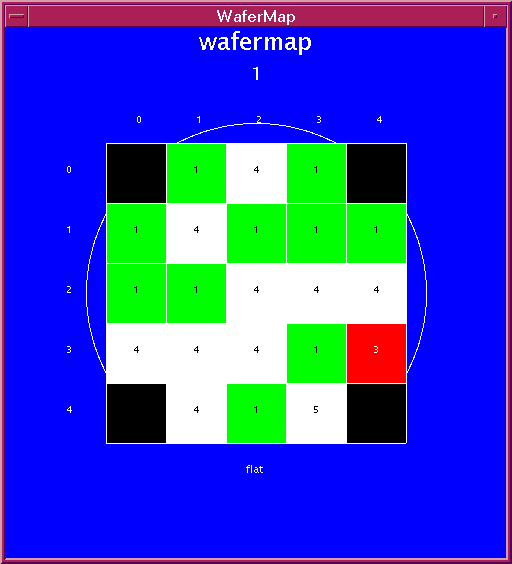
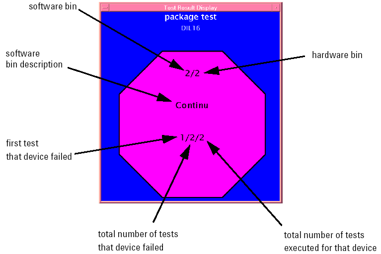
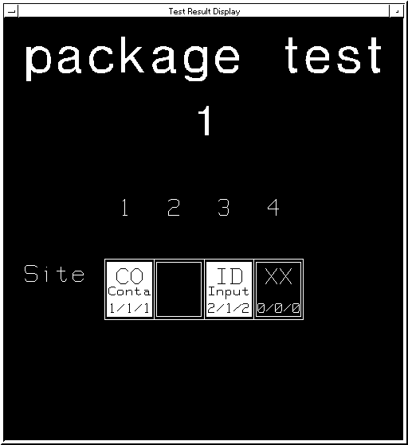

Viewing Results During Workorder Execution
During workorder execution, an overall graphical pass/fail result for each device is shown in the Wafermap Screen or the Result Display Screen for a package test (depending on your application model), as long as you have the graphic result display flag active (default state). See the figures below.

In the wafermap screen, each device on the wafer is represented by a colored square-with a number in it (see the figure above). Color and number identify the bin where the current device ended up after testing. The software bin number is also used in the data log.

When you perform multi-site testing, the appearance of your wafermap remains the same, as all devices are already displayed. However, for multi-site testing of packages, a result is shown for each site as shown below.

Where results are displayed, and where they are piped, is controlled by the various flags you can set during execution. These flags are explained in Accessing Testflow Settings.